random, background, random_with_background = create_test_background()background_stats
Calculate statistics to determine the surface brightness and spatial scale of the background variations.
aperture_stats
def aperture_stats(
data, mask, n_apertures, sqrt_n_pix, aperture_shape, annular_thickness:NoneType=None, n_pix_tolerance:float=0.1,
verbose:bool=False
):
Call self as a function.
measure_aperture_stats
def measure_aperture_stats(
data, mask, n_apertures, sqrt_n_pix, aperture_shape, annular_thickness:NoneType=None
):
Call self as a function.
stats_versus_size_for_box_fast
def stats_versus_size_for_box_fast(
data, mask, max_sqrt_n_pix, n_steps:int=20, min_ok_frac:float=0.5
):
Measure the background statistics for a range of box aperture sizes.
This is a fast version that uses block_reduce to calculate the mean and median of the data in each box.
stats_versus_size
def stats_versus_size(
data, mask, n_apertures, max_sqrt_n_pix, aperture_shape, annular_thickness:NoneType=None,
n_pix_tolerance:float=0.1, n_steps:int=20, rms:NoneType=None, verbose:bool=False, progress:bool=False
):
Call self as a function.
convert_to_mag
def convert_to_mag(
results, zp:float=23.9, pix_scl:float=0.3
):
Call self as a function.
background_stats_plot
def background_stats_plot(
results, true_bkg_std:NoneType=None, errorbars:bool=False, zp_mag:NoneType=None, pixel_scale:NoneType=None,
filename:NoneType=None
):
Call self as a function.
measure
def measure(
filename, # the filename to test
path, # the folder containing the images
mask:NoneType=None, # an optional mask to apply to the image
create_mask:bool=True, # generate and apply a mask if not supplied
estimate_background:bool=True, # allow masking to estimate the background from the median of the image
bkg_mesh_size:NoneType=None, # size of the background mesh boxes in pixels
bkg_filter_size:NoneType=None, # median filter background over `bkg_filter_size` x `bkg_filter_size` boxes
plots:bool=True, # output plots
outpath:NoneType=None, # the folder where all output plots should be placed
separate_detectors:bool=True, # consider multiple science extensions individually
n_apertures:int=1000, # number of apertures per size
max_sqrt_n_pix:int=500, # maximum aperture size as sqrt(number of pixels)
aperture_shape:str='square', # square or circle
annular_thickness:NoneType=None, # None for solid apertures, or a number on range (0, 1) to specify relative thickness of annulus
n_pix_tolerance:float=0.1, # the largest allowed relative deviation from the requested n_pix
n_steps:int=25, # the number of different sqrt_n_pix to measure
zp_mag:float=23.9, # convert to magnitudes using this zero point, unless it is None
errorbars:bool=True, # plot errorbars
debug:bool=False, # save debug images
verbose:bool=False, # print verbose output
):
Determine statistics of the background.
Test
Test the performance on images containing random noise and a background varying on a particular spatial scale.
random_convolved = correlate_pixels(random, slope=0.8)
random_with_background_convolved = random_convolved + backgroundFraction of flux in central pixel is 56%mask = create_test_mask()
no_mask = mask * Falsedef plot_test_images(random, background, random_with_background, mask, circles=True):
fig, ax = plt.subplots(1, 4, figsize=(12, 6))
for a in ax:
a.set_xticks([])
a.set_yticks([])
vmin, vmax = np.percentile(random, (0.1, 99.9))
ax[0].imshow(random, vmin=vmin, vmax=vmax, cmap="seismic", interpolation="none")
ax[1].imshow(background, vmin=vmin, vmax=vmax, cmap="seismic", interpolation="none")
ax[2].imshow(
random_with_background,
vmin=vmin,
vmax=vmax,
cmap="seismic",
interpolation="none",
)
ax[3].imshow(mask, cmap="seismic", interpolation="none")
if circles:
x = 120
for i, radius in enumerate((10, 20, 40, 80)):
circle = plt.Circle((x + radius, 150), radius, ec="w", fc="none", lw=5)
ax[1].add_patch(circle)
circle = plt.Circle((x + radius, 150), radius, ec="k", fc="none")
ax[1].add_patch(circle)
rlabel = "r=" if i == 0 else ""
ax[1].annotate(
f"{rlabel}{radius}px",
(x + radius, 220 + radius),
ha="center",
color="k",
path_effects=[pe.withStroke(linewidth=4, foreground="white")],
)
x += 2 * radius + 160
plt.tight_layout()plot_test_images(random, background, random_with_background, mask, circles=True)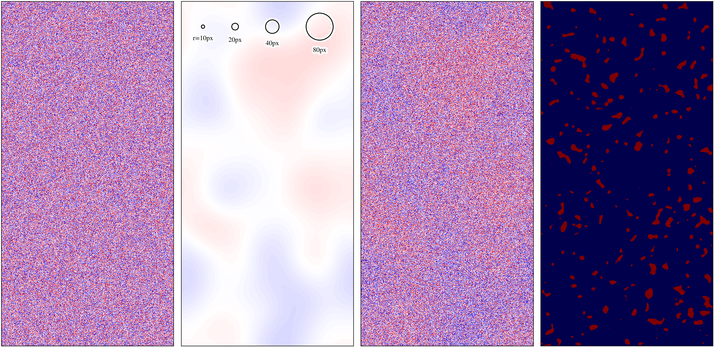
Calculate the standard deviation of the average over many apertures of a given size.
First with no mask and square apertures.
results = aperture_stats(
random,
no_mask,
n_apertures=100,
sqrt_n_pix=100,
aperture_shape="square",
annular_thickness=None,
n_pix_tolerance=0.1,
)
assert results["n_ok"] == 100
results{'sqrt_n_pix': 100,
'std_mean': 0.009536020991178649,
'err_std_mean': 0.000677695502167142,
'err_bs_std_mean': 0.001415343555416849,
'std_median': 0.013607557599693329,
'err_std_median': 0.0009670470093682829,
'err_bs_std_median': 0.0014262443760027338,
'n_ok': 100,
'outer_size': 100.0}Now with a mask, note that n_ok decrease a bit, but the outer_size has increased to compensate for the masking.
aperture_stats(random, mask, n_apertures=100, sqrt_n_pix=100, aperture_shape="square"){'sqrt_n_pix': 100,
'std_mean': 0.011925662918417373,
'err_std_mean': 0.0006564861374144307,
'err_bs_std_mean': 0.000993948954867461,
'std_median': 0.013028991154390207,
'err_std_median': 0.0007172223578567745,
'err_bs_std_median': 0.0012580365179107357,
'n_ok': 166,
'outer_size': 103.14212462587935}Let’s compare the processed and convolved images for a single pixel.
aperture_stats(random, mask, n_apertures=100, sqrt_n_pix=1, aperture_shape="square"){'sqrt_n_pix': 1,
'std_mean': 0.9931587389273,
'err_std_mean': 0.07282193191096697,
'err_bs_std_mean': 0.15704656183711996,
'std_median': 0.9931587389273,
'err_std_median': 0.07282193191096697,
'err_bs_std_median': 0.15546943637929816,
'n_ok': 94,
'outer_size': 1.0}aperture_stats(
random_convolved, mask, n_apertures=100, sqrt_n_pix=1, aperture_shape="square"
){'sqrt_n_pix': 1,
'std_mean': 0.7188988823506174,
'err_std_mean': 0.05299792874567214,
'err_bs_std_mean': 0.08597811345310843,
'std_median': 0.7188988823506174,
'err_std_median': 0.05299792874567214,
'err_bs_std_median': 0.08434945047332984,
'n_ok': 93,
'outer_size': 1.0}Try a square annulus. The outer_size has increased to achieve the same number of pixels.
aperture_stats(
random,
mask,
n_apertures=100,
sqrt_n_pix=100,
aperture_shape="square",
annular_thickness=0.5,
){'sqrt_n_pix': 100,
'std_mean': 0.01170577271817315,
'err_std_mean': 0.0006443815802756672,
'err_bs_std_mean': 0.0009705360971256971,
'std_median': 0.0133172371567201,
'err_std_median': 0.0007330897780571615,
'err_bs_std_median': 0.0012341004429097205,
'n_ok': 166,
'outer_size': 118.68861422067508}Try a circle. The outer_size has increased to achieve the same number of pixels as a square.
aperture_stats(random, mask, n_apertures=100, sqrt_n_pix=100, aperture_shape="circle"){'sqrt_n_pix': 100,
'std_mean': 0.01004656929633298,
'err_std_mean': 0.0005598734179974864,
'err_bs_std_mean': 0.0009872192120235696,
'std_median': 0.012240448217474305,
'err_std_median': 0.0006821335103755244,
'err_bs_std_median': 0.0013740435924119185,
'n_ok': 162,
'outer_size': 116.43608055668524}Try a circular annulus. Again, the outer_size has increased to achieve the same number of pixels.
aperture_stats(
random,
mask,
n_apertures=100,
sqrt_n_pix=100,
aperture_shape="circle",
annular_thickness=0.5,
){'sqrt_n_pix': 100,
'std_mean': 0.010426841409908691,
'err_std_mean': 0.0005605504669297011,
'err_bs_std_mean': 0.0010827526864482084,
'std_median': 0.011975648231849644,
'err_std_median': 0.0006438148375182733,
'err_bs_std_median': 0.0011628767284151142,
'n_ok': 174,
'outer_size': 134.06038336917868}Now try with a spatially varying background. On small scales, the standard deviations match the processed pixel rms, but on larger scales they match the strength of the background variations.
aperture_stats(
random_with_background, mask, n_apertures=100, sqrt_n_pix=1, aperture_shape="square"
){'sqrt_n_pix': 1,
'std_mean': 1.0893309502367292,
'err_std_mean': 0.08074658224807635,
'err_bs_std_mean': 0.14711198829229252,
'std_median': 1.0893309502367292,
'err_std_median': 0.08074658224807635,
'err_bs_std_median': 0.14081926337212186,
'n_ok': 92,
'outer_size': 1.0}aperture_stats(
random_with_background,
mask,
n_apertures=1000,
sqrt_n_pix=100,
aperture_shape="square",
){'sqrt_n_pix': 100,
'std_mean': 0.08994474935064482,
'err_std_mean': 0.0015700248541283802,
'err_bs_std_mean': 0.0034513243764336264,
'std_median': 0.0904953133368859,
'err_std_median': 0.0015796351887885688,
'err_bs_std_median': 0.003337735056337676,
'n_ok': 1642,
'outer_size': 102.78192561973624}Now let’s measure the statistics in apertures of a series of sizes. First with no spatially varying background.
results_no_bkg = stats_versus_size(
random, mask, n_apertures=100, max_sqrt_n_pix=250, aperture_shape="square"
)background_stats_plot(results_no_bkg)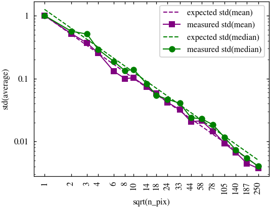
What about if the pixels are a bit correlated (i.e. by a convolution)?
results_no_bkg_convolved = stats_versus_size(
random_convolved, mask, n_apertures=100, max_sqrt_n_pix=250, aperture_shape="square"
)background_stats_plot(results_no_bkg_convolved)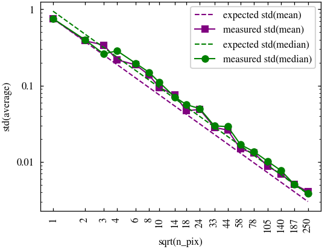
And now with a spatially varying background.
results_with_bkg = stats_versus_size(
random_with_background,
mask,
n_apertures=100,
max_sqrt_n_pix=250,
aperture_shape="square",
)background_stats_plot(results_with_bkg, true_bkg_std=0.1)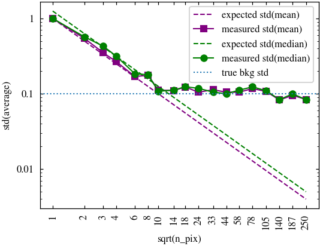
And again, what about if the pixels are a bit correlated (i.e. by a convolution)?
results_with_bkg_convolved = stats_versus_size(
random_with_background_convolved,
mask,
n_apertures=100,
max_sqrt_n_pix=250,
aperture_shape="square",
)background_stats_plot(results_with_bkg_convolved, true_bkg_std=0.1)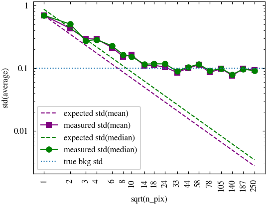
Create a background containing spatial variations with a different rms, to compare.
random, background, random_with_background = create_test_background(background_rms=0.2)results_with_bkg = stats_versus_size(
random_with_background,
mask,
n_apertures=100,
max_sqrt_n_pix=250,
aperture_shape="square",
)background_stats_plot(results_with_bkg, true_bkg_std=0.2)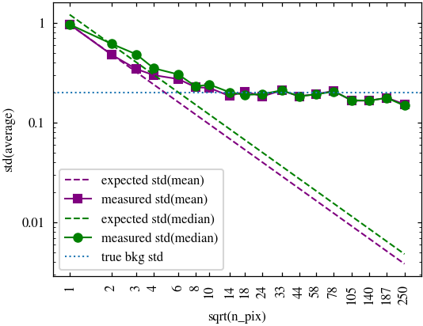
Create a background containing spatial variations on a different scale, to compare.
random, background, random_with_background = create_test_background(background_scale=10)random_convolved = correlate_pixels(random, slope=0.8)
random_with_background_convolved = random_convolved + backgroundFraction of flux in central pixel is 56%plot_test_images(random, background, random_with_background, mask)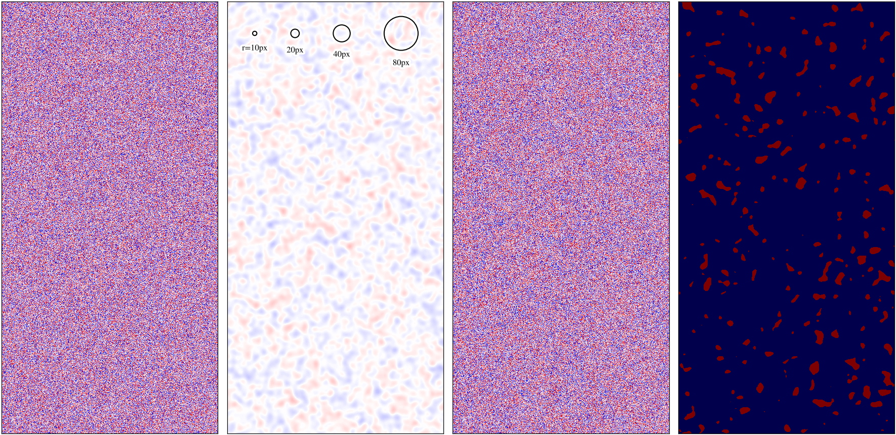
results_with_bkg = stats_versus_size(
random_with_background,
mask,
n_apertures=100,
max_sqrt_n_pix=250,
aperture_shape="square",
)background_stats_plot(results_with_bkg, true_bkg_std=0.1)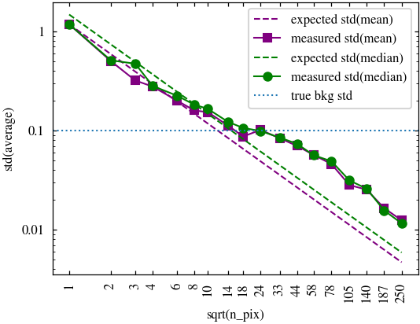
results_with_bkg_convolved = stats_versus_size(
random_with_background_convolved,
mask,
n_apertures=100,
max_sqrt_n_pix=250,
aperture_shape="square",
)background_stats_plot(results_with_bkg_convolved, true_bkg_std=0.1)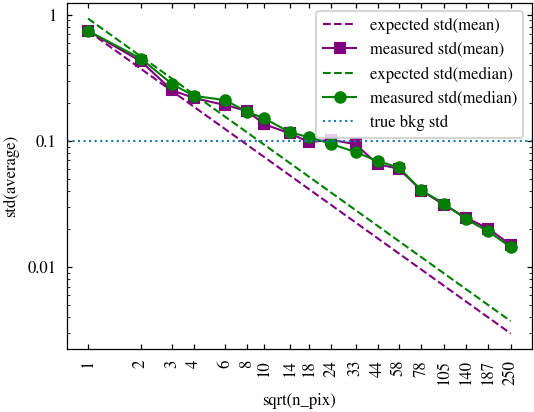
Example
The following is an example of using measure on an observation.
path = default_data_path("Q1_R1_processed_v0.4")
filename = "NIR/2683/EUC_NIR_W-STK_Y_2683.fits"
results_original, mask_original = measure(
filename, path / "stacked_original", debug=True, verbose=True
)n_apertures: 1000
target n_pix: 1
sqrt_n_pix: 1
n_ok: 413
n_nan: 587
median achieved_n_pix: 1
trying again after adjusting sqrt_n_pix to 1
n_ok: 448
n_nan: 552
median achieved_n_pix: 1
trying again after adjusting sqrt_n_pix to 1
n_ok: 425
n_nan: 575
median achieved_n_pix: 1
total number of valid apertures: 1286
n_apertures: 1000
target n_pix: 4
sqrt_n_pix: 2
n_ok: 412
n_nan: 555
median achieved_n_pix: 4
trying again after adjusting sqrt_n_pix to 2
n_ok: 392
n_nan: 584
median achieved_n_pix: 4
trying again after adjusting sqrt_n_pix to 2
n_ok: 444
n_nan: 530
median achieved_n_pix: 4
total number of valid apertures: 1248
n_apertures: 1000
target n_pix: 9
sqrt_n_pix: 3
n_ok: 344
n_nan: 601
median achieved_n_pix: 9
trying again after adjusting sqrt_n_pix to 3
n_ok: 374
n_nan: 564
median achieved_n_pix: 9
trying again after adjusting sqrt_n_pix to 3
n_ok: 420
n_nan: 522
median achieved_n_pix: 9
total number of valid apertures: 1138
n_apertures: 1000
target n_pix: 16
sqrt_n_pix: 4
n_ok: 401
n_nan: 538
median achieved_n_pix: 16
trying again after adjusting sqrt_n_pix to 4
n_ok: 402
n_nan: 537
median achieved_n_pix: 16
trying again after adjusting sqrt_n_pix to 4
n_ok: 386
n_nan: 549
median achieved_n_pix: 16
total number of valid apertures: 1189
n_apertures: 1000
target n_pix: 25
sqrt_n_pix: 5
n_ok: 393
n_nan: 514
median achieved_n_pix: 25
trying again after adjusting sqrt_n_pix to 5
n_ok: 377
n_nan: 536
median achieved_n_pix: 25
trying again after adjusting sqrt_n_pix to 5
n_ok: 398
n_nan: 515
median achieved_n_pix: 25
total number of valid apertures: 1168
n_apertures: 1000
target n_pix: 36
sqrt_n_pix: 6
n_ok: 386
n_nan: 508
median achieved_n_pix: 36
trying again after adjusting sqrt_n_pix to 6
n_ok: 388
n_nan: 523
median achieved_n_pix: 36
trying again after adjusting sqrt_n_pix to 6
n_ok: 368
n_nan: 529
median achieved_n_pix: 36
total number of valid apertures: 1142
n_apertures: 1000
target n_pix: 64
sqrt_n_pix: 8
n_ok: 352
n_nan: 513
median achieved_n_pix: 64
trying again after adjusting sqrt_n_pix to 8
n_ok: 361
n_nan: 530
median achieved_n_pix: 64
trying again after adjusting sqrt_n_pix to 8
n_ok: 372
n_nan: 512
median achieved_n_pix: 64
total number of valid apertures: 1085
n_apertures: 1000
target n_pix: 100
sqrt_n_pix: 10
n_ok: 343
n_nan: 530
median achieved_n_pix: 100
trying again after adjusting sqrt_n_pix to 10
n_ok: 352
n_nan: 517
median achieved_n_pix: 100
trying again after adjusting sqrt_n_pix to 10
n_ok: 316
n_nan: 537
median achieved_n_pix: 100
total number of valid apertures: 1011
n_apertures: 1000
target n_pix: 169
sqrt_n_pix: 13
n_ok: 343
n_nan: 499
median achieved_n_pix: 169
trying again after adjusting sqrt_n_pix to 13
n_ok: 347
n_nan: 495
median achieved_n_pix: 169
trying again after adjusting sqrt_n_pix to 13
n_ok: 339
n_nan: 514
median achieved_n_pix: 168
total number of valid apertures: 1029
n_apertures: 1000
target n_pix: 289
sqrt_n_pix: 17
n_ok: 312
n_nan: 503
median achieved_n_pix: 280
trying again after adjusting sqrt_n_pix to 17
n_ok: 304
n_nan: 520
median achieved_n_pix: 289
trying again after adjusting sqrt_n_pix to 17
n_ok: 316
n_nan: 507
median achieved_n_pix: 286
total number of valid apertures: 932
n_apertures: 1000
target n_pix: 484
sqrt_n_pix: 22
n_ok: 304
n_nan: 484
median achieved_n_pix: 453
trying again after adjusting sqrt_n_pix to 23
n_ok: 332
n_nan: 526
median achieved_n_pix: 477
trying again after adjusting sqrt_n_pix to 23
n_ok: 374
n_nan: 506
median achieved_n_pix: 489
total number of valid apertures: 1010
n_apertures: 1000
target n_pix: 841
sqrt_n_pix: 29
n_ok: 262
n_nan: 505
median achieved_n_pix: 766
trying again after adjusting sqrt_n_pix to 30
n_ok: 297
n_nan: 516
median achieved_n_pix: 844
trying again after adjusting sqrt_n_pix to 30
n_ok: 328
n_nan: 489
median achieved_n_pix: 839
total number of valid apertures: 887
n_apertures: 1000
target n_pix: 1444
sqrt_n_pix: 38
n_ok: 265
n_nan: 492
median achieved_n_pix: 1316
trying again after adjusting sqrt_n_pix to 40
n_ok: 339
n_nan: 485
median achieved_n_pix: 1434
trying again after adjusting sqrt_n_pix to 40
n_ok: 314
n_nan: 495
median achieved_n_pix: 1433
total number of valid apertures: 918
n_apertures: 1000
target n_pix: 2401
sqrt_n_pix: 49
n_ok: 275
n_nan: 473
median achieved_n_pix: 2174
trying again after adjusting sqrt_n_pix to 51
n_ok: 352
n_nan: 486
median achieved_n_pix: 2366
trying again after adjusting sqrt_n_pix to 52
n_ok: 339
n_nan: 508
median achieved_n_pix: 2452
total number of valid apertures: 966
n_apertures: 1000
target n_pix: 3969
sqrt_n_pix: 63
n_ok: 228
n_nan: 517
median achieved_n_pix: 3539
trying again after adjusting sqrt_n_pix to 67
n_ok: 383
n_nan: 475
median achieved_n_pix: 3971
trying again after adjusting sqrt_n_pix to 67
n_ok: 402
n_nan: 465
median achieved_n_pix: 3994
total number of valid apertures: 1013
n_apertures: 1000
target n_pix: 6724
sqrt_n_pix: 82
n_ok: 252
n_nan: 483
median achieved_n_pix: 6038
trying again after adjusting sqrt_n_pix to 87
n_ok: 395
n_nan: 483
median achieved_n_pix: 6656
trying again after adjusting sqrt_n_pix to 87
n_ok: 378
n_nan: 493
median achieved_n_pix: 6810
total number of valid apertures: 1025
n_apertures: 1000
target n_pix: 11236
sqrt_n_pix: 106
n_ok: 233
n_nan: 462
median achieved_n_pix: 9974
trying again after adjusting sqrt_n_pix to 113
n_ok: 443
n_nan: 458
median achieved_n_pix: 11310
trying again after adjusting sqrt_n_pix to 112
n_ok: 398
n_nan: 481
median achieved_n_pix: 11159
total number of valid apertures: 1074
n_apertures: 1000
target n_pix: 18769
sqrt_n_pix: 137
n_ok: 217
n_nan: 471
median achieved_n_pix: 16599
trying again after adjusting sqrt_n_pix to 146
n_ok: 407
n_nan: 493
median achieved_n_pix: 18847
trying again after adjusting sqrt_n_pix to 145
n_ok: 402
n_nan: 474
median achieved_n_pix: 18672
total number of valid apertures: 1026
n_apertures: 1000
target n_pix: 31329
sqrt_n_pix: 177
n_ok: 204
n_nan: 444
median achieved_n_pix: 27319
trying again after adjusting sqrt_n_pix to 190
n_ok: 424
n_nan: 473
median achieved_n_pix: 31499
trying again after adjusting sqrt_n_pix to 189
n_ok: 412
n_nan: 462
median achieved_n_pix: 31334
total number of valid apertures: 1040
n_apertures: 1000
target n_pix: 52900
sqrt_n_pix: 230
n_ok: 187
n_nan: 470
median achieved_n_pix: 46371
trying again after adjusting sqrt_n_pix to 246
n_ok: 412
n_nan: 464
median achieved_n_pix: 52494
trying again after adjusting sqrt_n_pix to 247
n_ok: 421
n_nan: 477
median achieved_n_pix: 52960
total number of valid apertures: 1020
n_apertures: 1000
target n_pix: 88804
sqrt_n_pix: 298
n_ok: 173
n_nan: 441
median achieved_n_pix: 77370
trying again after adjusting sqrt_n_pix to 319
n_ok: 432
n_nan: 425
median achieved_n_pix: 88870
trying again after adjusting sqrt_n_pix to 319
n_ok: 451
n_nan: 436
median achieved_n_pix: 89156
total number of valid apertures: 1056
n_apertures: 1000
target n_pix: 148996
sqrt_n_pix: 386
n_ok: 157
n_nan: 398
median achieved_n_pix: 129562
trying again after adjusting sqrt_n_pix to 414
n_ok: 443
n_nan: 396
median achieved_n_pix: 148789
trying again after adjusting sqrt_n_pix to 414
n_ok: 462
n_nan: 399
median achieved_n_pix: 149827
total number of valid apertures: 1062
n_apertures: 1000
target n_pix: 250000
sqrt_n_pix: 500
n_ok: 141
n_nan: 397
median achieved_n_pix: 217522
trying again after adjusting sqrt_n_pix to 536
n_ok: 433
n_nan: 397
median achieved_n_pix: 248287
trying again after adjusting sqrt_n_pix to 538
n_ok: 466
n_nan: 375
median achieved_n_pix: 251526
total number of valid apertures: 1040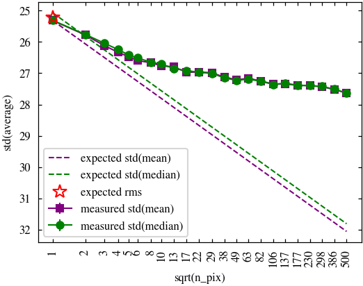
path = default_data_path("Q1_R1_processed_v0.4")
filename = "NIR/2683/EUC_NIR_W-STK_Y_2683.fits"
results_processed, mask_processed = measure(filename, path / "stacked")mask = mask_original | mask_processedresults_original_remasked, _ = measure(
filename,
path / "stacked_original",
mask=mask,
outpath=path / "stacked_original" / "background_stats_remasked",
)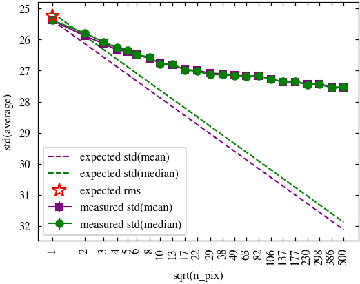
results_processed, _ = measure(
filename,
path / "stacked",
mask=mask,
outpath=path / "stacked" / "background_stats_remasked",
)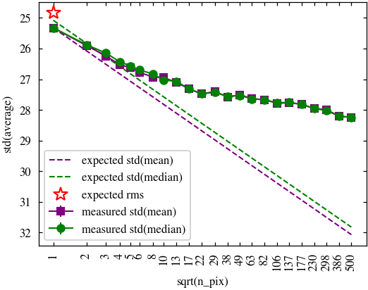
results_original_bkgsub, _ = measure(
filename,
path / "stacked_original",
mask=mask_original,
bkg_mesh_size=500,
outpath=path / "stacked_original" / "background_stats_bkgsub",
)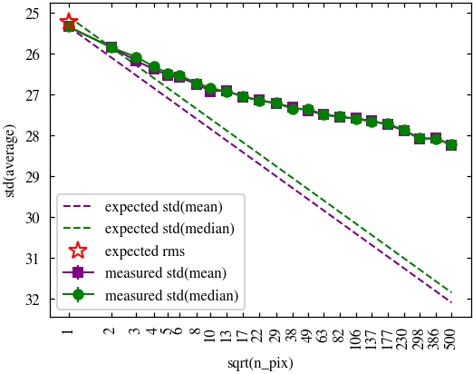
results_original_remasked_bkgsub, _ = measure(
filename,
path / "stacked_original",
mask=mask,
bkg_mesh_size=500,
outpath=path / "stacked_original" / "background_stats_remasked_bkgsub",
)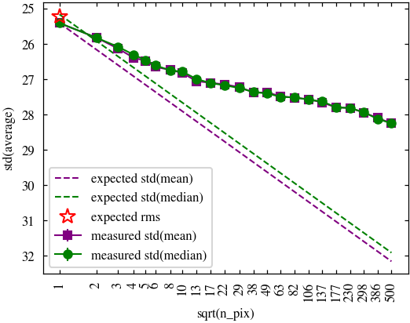
results_processed_bkgsub, _ = measure(
filename,
path / "stacked",
mask=mask,
bkg_mesh_size=500,
outpath=path / "stacked" / "background_stats_bgsub",
)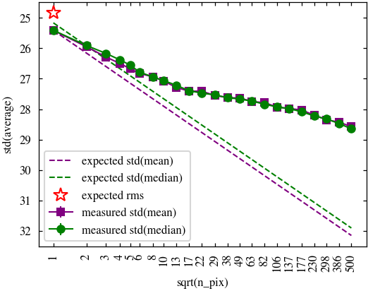
def plot_results(
results_original,
results_processed,
results_original_remasked,
results_original_remasked_bkgsub,
results_processed_bkgsub,
zp_mag=23.9,
pixel_scale=0.3,
):
results_original = convert_to_mag(results_original, zp_mag, pixel_scale)
results_processed = convert_to_mag(results_processed, zp_mag, pixel_scale)
results_original_remasked = convert_to_mag(
results_original_remasked, zp_mag, pixel_scale
)
results_original_remasked_bkgsub = convert_to_mag(
results_original_remasked_bkgsub, zp_mag, pixel_scale
)
results_processed_bkgsub = convert_to_mag(
results_processed_bkgsub, zp_mag, pixel_scale
)
fig, ax = plt.subplots()
ax.plot(
1,
results_original["expected_std_from_rms_mean"][0],
"*",
color="red",
mfc="none",
markersize=10,
label="expected rms",
zorder=10,
)
ax.plot(
results_processed["sqrt_n_pix"],
results_original["expected_std_median"],
"--",
label="ideal",
)
ax.plot(
results_original_remasked["sqrt_n_pix"],
results_original_remasked["std_median"],
linestyle="-",
marker="s",
color="purple",
label="original",
)
ax.plot(
results_original_remasked_bkgsub["sqrt_n_pix"],
results_original_remasked_bkgsub["std_median"],
linestyle="--",
marker="s",
color="purple",
mfc="none",
label="original bkgsub",
)
ax.set_xscale("log")
ax.yaxis.set_major_formatter(FuncFormatter(lambda y, _: f"{y:g}"))
ax.xaxis.set_ticks(
results_original["sqrt_n_pix"][::2],
[f"{x:.0f}" for x in results_original["sqrt_n_pix"][::2]],
)
ax.xaxis.set_minor_locator(NullLocator())
ax.set_xlabel("sqrt(n_pix)")
ax.set_ylabel("std(median) [mag arcsec$^{-2}$]")
ax.tick_params(axis="x", labelrotation=90)
ax.legend()
ax.grid(axis="y")
ax.yaxis.set_inverted(True)
ax.set_ylim(30, 25)
ax2 = ax.twiny()
ax2.set_xscale("log")
ax2.set_xlabel("scale [arcsec]")
ax2.xaxis.set_ticks(
results_original["sqrt_n_pix"][::2],
[f"{x:.1f}" for x in results_original["sqrt_n_pix"][::2] * pixel_scale],
)
ax2.xaxis.set_minor_locator(NullLocator())
ax2.tick_params(axis="x", labelrotation=90)
ax2.set_xlim(ax.get_xlim())
outpath = path / "background_stats"
outpath.mkdir(parents=True, exist_ok=True)
outfile = outpath / "original.pdf"
fig.savefig(outfile)
ax.plot(
results_processed["sqrt_n_pix"],
results_processed["std_median"],
linestyle="-",
marker="o",
color="green",
label="processed",
)
ax.plot(
results_processed_bkgsub["sqrt_n_pix"],
results_processed_bkgsub["std_median"],
linestyle="--",
marker="o",
color="green",
mfc="none",
label="processed bkgsub",
)
ax.legend()
ax.yaxis.set_inverted(True)
outfile = outpath / "original_vs_processed.pdf"
fig.savefig(outfile)plot_results(
results_original,
results_processed,
results_original_remasked,
results_original_remasked_bkgsub,
results_processed_bkgsub,
)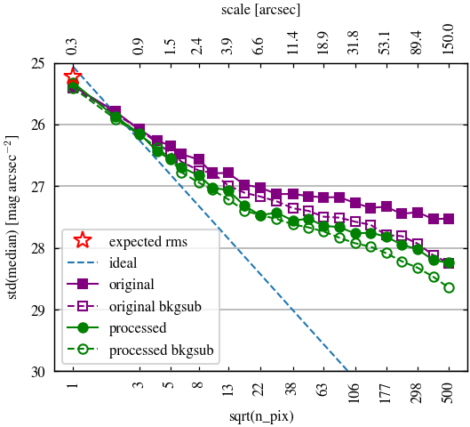